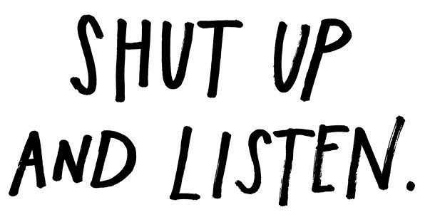
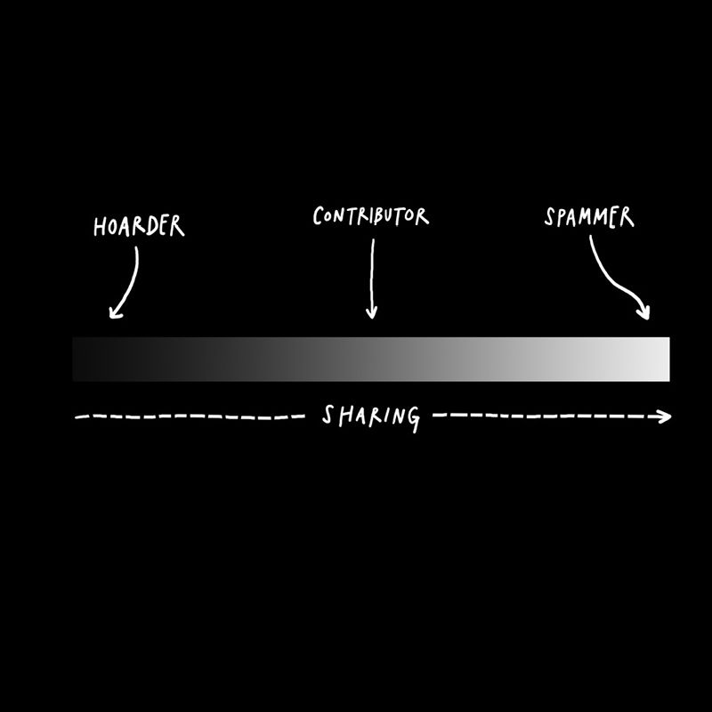
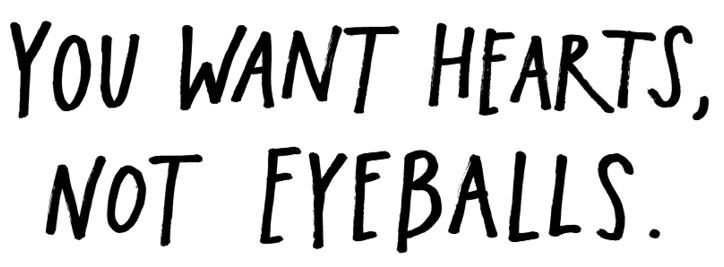
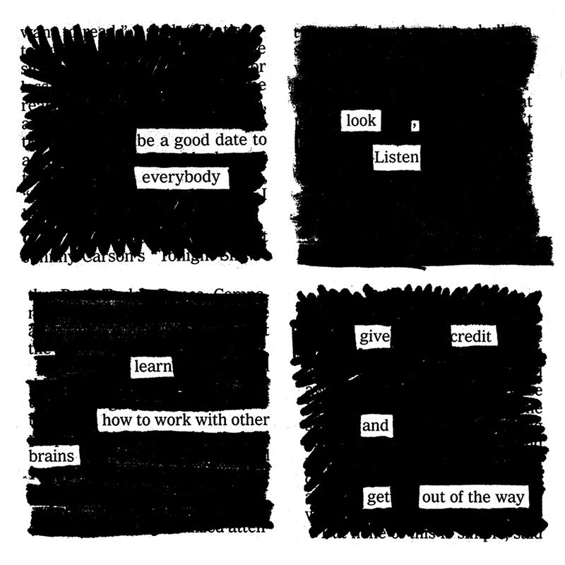
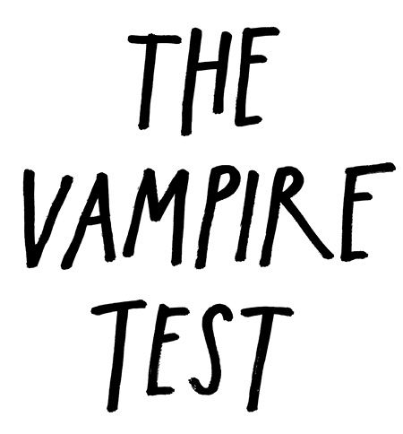
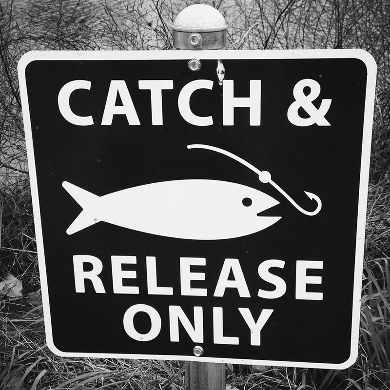
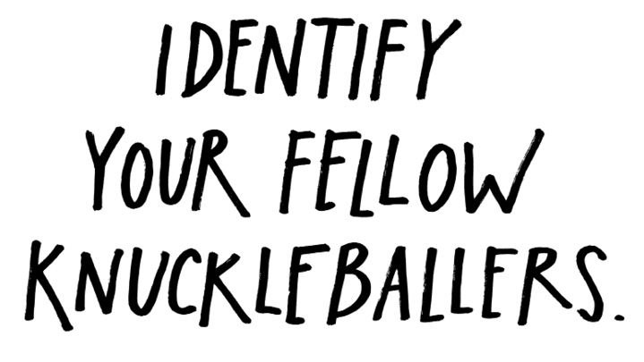
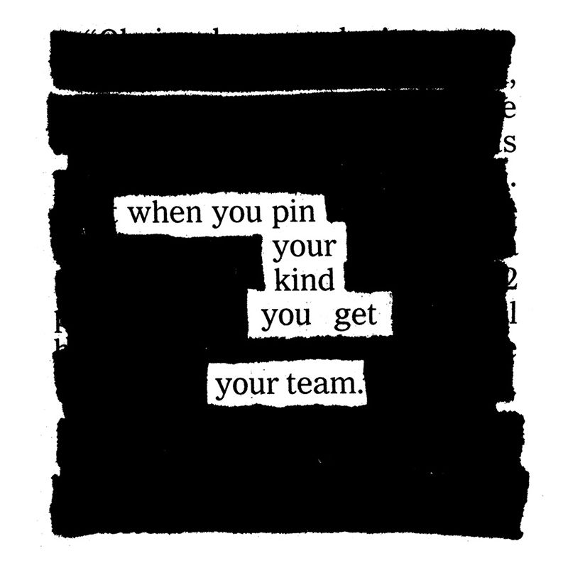
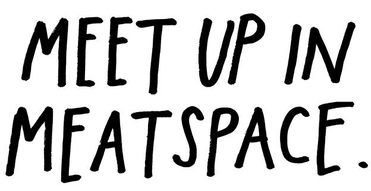
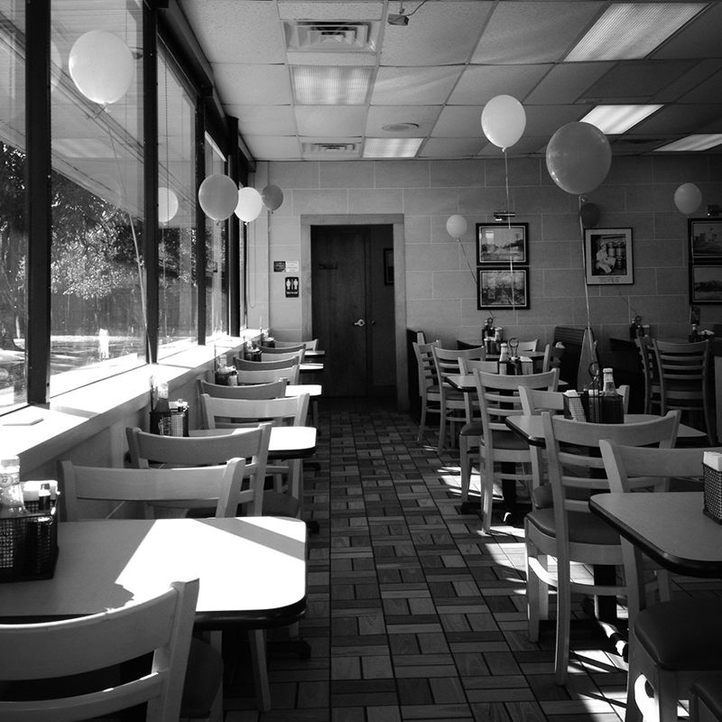

“When people realize they’re being listened to, they tell you things.”
—Richard Ford
When I was in college, there was always one classmate in every creative writing workshop who claimed, “I love to write, but I don’t like to read.” It was evident right away that you could pretty much write that kid off completely. As every writer knows, if you want to be a writer, you have to be a reader first.
“The writing community is full of lame-o people who want to be published in journals even though they don’t read the magazines that they want to be published in,” says writer Dan Chaon. “These people deserve the rejections that they will undoubtedly receive, and no one should feel sorry for them when they cry about how they can’t get anyone to accept their stories.”
I call these people human spam. They’re everywhere, and they exist in every profession. They don’t want to pay their dues, they want their piece right here, right now. They don’t want to listen to your ideas; they want to tell you theirs. They don’t want to go to shows, but they thrust flyers at you on the sidewalk and scream at you to come to theirs. You should feel pity for these people and their delusions. At some point, they didn’t get the memo that the world owes none of us anything.

Of course, you don’t have to be a nobody to be human spam—I’ve watched plenty of interesting, successful people slowly turn into it. The world becomes all about them and their work. They can’t find the time to be interested in anything other than themselves.
No matter how famous they get, the forward-thinking artists of today aren’t just looking for fans or passive consumers of their work, they’re looking for potential collaborators, or co-conspirators. These artists acknowledge that good work isn’t created in a vacuum, and that the experience of art is always a two-way street, incomplete without feedback. These artists hang out online and answer questions. They ask for reading recommendations. They chat with fans about the stuff they love.
The music producer Adrian Younge was hanging out on Twitter one day and tweeted, “Who is better: The Dramatics or The Delfonics?” As his followers erupted in a debate over the two soul groups, one follower mentioned that the lead singer of The Delfonics, William Hart, was a friend of his dad’s and that Hart just happened to be a fan of Younge’s music. The follower suggested that the two should collaborate. “To make a long story short,” Younge says, “a day later, I’m on the phone with William Hart and we’re speaking for like two hours . . . we hit it off in a way that was just cosmic.” Younge then produced a brand-new record with Hart, Adrian Younge Presents The Delfonics.
That story is great for two reasons. One, it’s the only story of an album I know of whose existence can be traced to a single tweet. Two, it shows what happens when a musician interacts with his fans on the level of a fan himself.
If you want fans, you have to be a fan first. If you want to be accepted by a community, you have to first be a good citizen of that community. If you’re only pointing to your own stuff online, you’re doing it wrong. You have to be a connector. The writer Blake Butler calls this being an open node. If you want to get, you have to give. If you want to be noticed, you have to notice. Shut up and listen once in a while. Be thoughtful. Be considerate. Don’t turn into human spam. Be an open node.

“What you want is to follow and be followed by human beings who care about issues you care about. This thing we make together. This thing is about hearts and minds, not eyeballs.”
—Jeffrey Zeldman
Stop worrying about how many people follow you online and start worrying about the quality of people who follow you. Don’t waste your time reading articles about how to get more followers. Don’t waste time following people online just because you think it’ll get you somewhere. Don’t talk to people you don’t want to talk to, and don’t talk about stuff you don’t want to talk about.
If you want followers, be someone worth following. Donald Barthelme supposedly said to one of his students, “Have you tried making yourself a more interesting person?” This seems like a really mean thing to say, unless you think of the word interesting the way writer Lawrence Weschler does: For him, to be “interest-ing” is to be curious and attentive, and to practice “the continual projection of interest.” To put it more simply: If you want to be interesting, you have to be interested.

It is actually true that life is all about “who you know.” But who you know is largely dependent on who you are and what you do, and the people you know can’t do anything for you if you’re not doing good work. “Connections don’t mean shit,” says record producer Steve Albini. “I’ve never had any connections that weren’t a natural outgrowth of doing things I was doing anyway.” Albini laments how many people waste time and energy trying to make connections instead of getting good at what they do, when “being good at things is the only thing that earns you clout or connections.”
Make stuff you love and talk about stuff you love and you’ll attract people who love that kind of stuff. It’s that simple.
Don’t be creepy. Don’t be a jerk. Don’t waste people’s time. Don’t ask too much. And don’t ever ever ask people to follow you. “Follow me back?” is the saddest question on the Internet.

“Whatever excites you, go do it. Whatever drains you, stop doing it.”
—Derek Sivers
There’s a funny story in John Richardson’s biography, A Life of Picasso. Pablo Picasso was notorious for sucking all the energy out of the people he met. His granddaughter Marina claimed that he squeezed people like one of his tubes of oil paints. You’d have a great time hanging out all day with Picasso, and then you’d go home nervous and exhausted, and Picasso would go back to his studio and paint all night, using the energy he’d sucked out of you.
Most people put up with this because they got to hang out with Picasso all day, but not Constantin Brancusi, the Romanian-born sculptor. Brancusi hailed from the Carpathian Mountains, and he knew a vampire when he saw one. He was not going to have his energy or the fruits of his energy juiced by Picasso, so he refused to have anything to do with him.

Brancusi practiced what I call The Vampire Test. It’s a simple way to know who you should let in and out of your life. If, after hanging out with someone you feel worn out and depleted, that person is a vampire. If, after hanging out with someone you still feel full of energy, that person is not a vampire. Of course, The Vampire Test works on many things in our lives, not just people—you can apply it to jobs, hobbies, places, etc.
Vampires cannot be cured. Should you find yourself in the presence of a vampire, be like Brancusi, and banish it from your life forever.
“Part of the act of creating is in discovering your own kind. They are everywhere. But don’t look for them in the wrong places.”
—Henry Miller

I recently became fascinated by the baseball pitcher R. A. Dickey. Dickey’s pitch is the knuckleball—a slow, awkward pitch that’s really hard to throw with any kind of consistency. When a pitcher throws a knuckleball, he releases the baseball with as little spin as possible. The air current moves against the baseball’s seams, and it makes the baseball move really strangely. Once a good knuckleball is thrown, it’s equally unpredictable to the batter, the catcher, and the pitcher who threw it. (Sounds a lot like the creative process, huh?)
Knuckleball pitchers are basically the ugly ducklings of baseball. Because there are so few of them, they actually form a kind of brotherhood, and they often get together and share tips with one another. Dickey writes about how rare this is in his memoir, Wherever I Wind Up: “There’s no chance that an opposing pitcher, no matter how nice a guy, is going to invite me to watch how he grips and throws his split-fingered fastball or slider. Those are state secrets.” With his fellow knuckleballers, however, things are different: “Knuckleballers don’t keep secrets. It’s as if we have a greater mission beyond our own fortunes. And that mission is to pass it on, to keep the pitch alive.”
As you put yourself and your work out there, you will run into your fellow knuckleballers. These are your real peers—the people who share your obsessions, the people who share a similar mission to your own, the people with whom you share a mutual respect. There will only be a handful or so of them, but they’re so, so important. Do what you can to nurture your relationships with these people. Sing their praises to the universe. Invite them to collaborate. Show them work before you show anybody else. Call them on the phone and share your secrets. Keep them as close as you can.

“It’s all about paying attention. Attention is vitality. It connects you with others.”
—Susan Sontag

“You and I will be around a lot longer than Twitter, and nothing substitutes face to face.”
—Rob Delaney
It freaks me out a little bit how many of my very favorite people in the world came into my life as ones and zeros.
I love meeting my online friends “IRL.” (IRL = in real life.) There’s never any small talk—we know all about one another and what one another does. We can just sip beer or some other social lubricant and talk about big ideas. There’s been a few times that I’ve asked people what they think the best thing about being online is, and they’ll point around the table and say, “What we’re doing here.”
I love the phenomenon of “meetups”—an online community throwing a party at a bar or a restaurant and inviting everybody to show up at a certain place and time. There’s a lot of these kinds of events in Austin, and I’m sure there’s a bunch in your town, too. (If there aren’t any—set one up!) They’re a lot less stressful than traditional forms of networking because you already know a lot of the people who show up, and you’ve seen their work.
Of course, a meetup doesn’t have to comprise a huge group of people. If you’ve been friends for a while with somebody online and you live in the same town, ask them if they want to grab a coffee. If you want to go all out, offer to buy them lunch. If you’re traveling, let your online friends know you’re going to be in town. I like asking my artist friends to take me to their favorite art museums and asking my writer friends to take me to their favorite bookstore. If we get sick of talking to one another, we can browse, and if we get sick of browsing, we can grab a coffee in the café.
Meeting people online is awesome, but turning them into IRL friends is even better.
